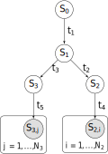
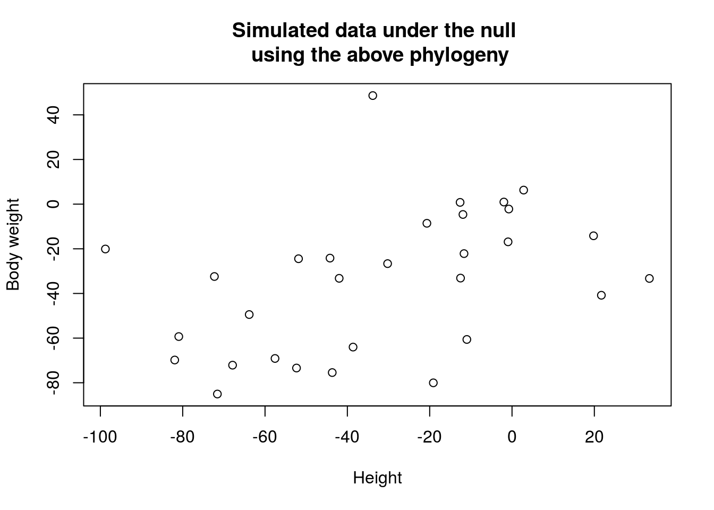

Last updated: 2018-03-10
Code version: 1e98d66
\[ \newcommand\var{\text{Var}} \newcommand\cov{\text{Cov}} \newcommand\E{\text{E}} \]
This section is build upon the introduction of Brownian motion and Orstein-Uhlenbeck process
Here, phylogeny data is referred to some quantative traits/measurements we collect from a wide range of species. For instance, it can be some phenotypic measurements, such as body weight, darkness of coat, metabolism rate, and etc. Besides, thanks to next-generation sequencing technology, gene expression level is also an observable quantative trait.
With these data in hand, one biologically interesting question immediately comes, that is how these traits change (evolve) along the tree of life. In particular, this section presents how we can make use of Brownian motion and OU process to tackle two problems along this line. They are
Q1: How do two traits correlate with each other? (e.g. Is body weight always correlated with body size?)
Q2: What causes the variation of a trait, drift or selection? (e.g. Does some gene undergo adaptive selection?)
Here, one thing to clarify is that the goal of this section is NOT to infer phylogeny itself. Instead, it utilizes known phylogenies and try to answer the questions raised above. For phylogeny inference, it can be inferred from sequence data (an example) or fossil record.
One special feature of phylogeny data is that the observations are not independent. More importantly, the underlying structure of the data is the key to tackle the problems we just asked. From this persecptive, both Brownian motion and Ornstein-Uhlenbeck process provide a straight-forward way to model such underlying dependencies.
Let’s consider a case of Q1 where we are interested in whether body weight, \(Y\), is related to height, \(X\), across a given set of species. Namely, the null hypothesis is that there is no correlation between \(X\) and \(Y\). Naively, we can perform an ordinary least-squared regression and test whether the coefficient is significantly deviated from zero. However, this approach requires independent observations, which does not hold for phylogeny data since the species’ height is correlated by sharing the same common ancestor. Suppose the phylogeny is

Note that \(t_2 + t_4 = t_3 + t_5\). Let’s simulate data under the null model and perform linear regression to test the correlation.
simulateBM <- function(t1, t2, t3, t4, t5, n1, n2, sigma = 1) {
v1 <- rnorm(1, mean = 0, sd = sqrt(t1) * sigma)
v2 <- v1 + rnorm(1, mean = 0, sd = sqrt(t2) * sigma)
v3 <- v1 + rnorm(1, mean = 0, sd = sqrt(t3) * sigma)
v4 <- v2 + rnorm(n1, mean = 0, sd = sqrt(t4) * sigma)
v5 <- v3 + rnorm(n2, mean = 0, sd = sqrt(t4) * sigma)
return(c(v4, v5))
}
# simulation
library(pander)
set.seed(2018)
t1 <- 100
t2 <- 1200
t3 <- 1300
t4 <- 500
n <- 15
t5 <- t2 + t4 - t3
x <- simulateBM(t1, t2, t3, t4, t5, n, n)
y <- simulateBM(t1, t2, t3, t4, t5, n, n)
df <- data.frame(height = x, body.weight = y)
plot(x, y, xlab = 'Height', ylab = 'Body weight', main = 'Simulated data under the null \n using the above phylogeny')
model <- lm(body.weight ~ height, data = df)
pander(summary(model)$coefficients)| Estimate | Std. Error | t value | Pr(>|t|) | |
|---|---|---|---|---|
| (Intercept) | -21.85 | 7.401 | -2.952 | 0.00633 |
| height | 0.4003 | 0.1609 | 2.488 | 0.01907 |
Though this is an extreme case of phylogeny, but it illustrates that to treat observations as independent samples may introduce false positive because of the underlying correlation within data.
From what we have discussed about Brownian motion on tree, the correlation comes from sharing ancestry, whereas the increment is always independent. Therefore, to remove correlation, instead of using \(X\) and \(Y\) directly, we can use the increment. For instance, let \(\Delta X_i = X_{1, i} - X_{2, i}\) and \(\Delta Y_i = Y_{1, i} - Y_{2, i}\). Then \(\Delta X_i\) is independent and ordinary least squared approach becomes valid.
# n1 = n2 = n
delta.x <- x[1 : n] - x[n + 1: (n + n)]
delta.y <- y[1 : n] - y[n + 1: (n + n)]
df.delta <- data.frame(height = delta.x, body.weight = delta.y)
model.delta <- lm(body.weight ~ height, data = df.delta)
pander(summary(model.delta)$coefficients)| Estimate | Std. Error | t value | Pr(>|t|) | |
|---|---|---|---|---|
| (Intercept) | -66.67 | 14.18 | -4.7 | 0.0004151 |
| height | -0.402 | 0.2372 | -1.695 | 0.1139 |
The result becomes less significant. Note that by taking increment, the sample size is shrinked to a half, but the estimate is more robust. In practice, there is more sophisticated way to obtain more independent increments from the data under Brownian motion assumption (see paper for your interest).
Brownian motion can capture the underlying dependency caused by shared ancestry but it also has some undesired properties. Such as
Then, \(\mu\) represents the optimal value of the quantitative trait and \(\alpha\) represents the effect of selection which pushes the species to move towards optimal trait value. The relative strength of \(\alpha\) and \(\sigma\) represents how genetic drift and natural selection are balanced during the trait evolution.
On the basis of OU process assumption, Q2 is somewhat reduced to an inference problem. In other word, the contributions of genetic drift and selection are embeded in the underlying correlation of the observed traits among species. And furthermore, such embedding is parametrized by OU process explicitly.
Specifically, similar to Brownian motion on tree, \(\cov(X(t_1), X(t_2))\) in OU process on tree also results from shared ancestry. Suppose the closest common ancestor of \(t_1\) and \(t_2\) is \(s\), then we have (analogous to ordinary OU process) \[\begin{align*} X(t_1) &= X(s) g(t_1 - s) + f(t_1 - s) Z_1 + const. \\ X(t_2) &= X(s) g(t_2 - s) + f(t_2 - s) Z_2 + const. \\ \cov(X(t_1), X(t_2)) &= g(t_1 - s)g(t_2 - s) \var(X(s)) \quad\text{, since $Z_1, Z_2$ are independent} \\ &= e^{-\alpha (t_1 + t_2 - s2)}(1 - e^{-2\alpha s}) \end{align*}\] In particular, if the observables are all present species (denoted as \(X_i(t)\) for the \(i\)th species), then \(t_1 = t_2 := t\). We have \[\begin{align*} \cov(X_i(t), X_j(t)) &= e^{-2\alpha (t - t_c(i, j))}(1 - e^{-2\alpha t_c(i, j)}) \end{align*}\], where \(t_c(i, j)\) is the time when the closest common ancestor of \(i\)th and \(j\)th species branches.
Moreover, the expected value of \(X(t)\) is kept the same as before, i.e. \(\E(X(t)) = \mu + (x_0 - \mu)e^{-\alpha t}\). Therefore, \(X_1(t), \cdots, X_n(t)\) has been casted as MVN with OU process parameterization so the maximum likelihood estimates can be obtained.
T. F. Hansen (1997) generalized OU process to handle the a more realistic case where different parts of the phylogeny may have different optimal values (see paper for your interest). For instance, even within primates, depending on the environments, different lineages may have different optimal body size. It turns out that this generalization affects expected value only (since in the derivation of covariance, the contribution of \(\mu\) is in \(const.\) term). The revised expected \(X(t)\) is \[\begin{align*} \E(X_i(t)) &= x_0 e^{-\alpha t} + \sum_k \mu_k e^{-\alpha (t - e_i(k)} (1 - e^{-\alpha l_i(k)}) \end{align*}\], where \(\mu_k\) is the \(k\)th optimal value. \(e_i(k)\) is the end time of the \(mu_k\) on the lineage of \(i\)th species (if \(\mu_k\) does not act on species \(i\), \(e_i(k) = 0\)) and \(l_i(k)\) is the elapsed time that \(\mu_k\) acts on species \(i\).
Under this framework, it is straight forward to construct likelihood ratio test to infer which model is favored by data and obtain biological insight. Recently, this framework has been used to infer genes that are under stablizing selection in mammalian species evolution which provides a formal way, beyond sample variation, to estimate expression variation (\(\frac{\sigma^2}{2\alpha}\)). It gives a more robust estimate from evolutionary perspective by borrowing information from other species (see the paper here for your interest).
sessionInfo()R version 3.4.3 (2017-11-30)
Platform: x86_64-pc-linux-gnu (64-bit)
Running under: Ubuntu 16.04.3 LTS
Matrix products: default
BLAS: /usr/lib/libblas/libblas.so.3.6.0
LAPACK: /usr/lib/lapack/liblapack.so.3.6.0
locale:
[1] LC_CTYPE=en_US.UTF-8 LC_NUMERIC=C
[3] LC_TIME=en_US.UTF-8 LC_COLLATE=en_US.UTF-8
[5] LC_MONETARY=en_US.UTF-8 LC_MESSAGES=en_US.UTF-8
[7] LC_PAPER=en_US.UTF-8 LC_NAME=C
[9] LC_ADDRESS=C LC_TELEPHONE=C
[11] LC_MEASUREMENT=en_US.UTF-8 LC_IDENTIFICATION=C
attached base packages:
[1] stats graphics grDevices utils datasets methods base
other attached packages:
[1] pander_0.6.1
loaded via a namespace (and not attached):
[1] compiler_3.4.3 backports_1.1.2 magrittr_1.5 rprojroot_1.3-2
[5] tools_3.4.3 htmltools_0.3.6 yaml_2.1.18 Rcpp_0.12.15
[9] stringi_1.1.6 rmarkdown_1.9 knitr_1.20 git2r_0.21.0
[13] stringr_1.3.0 digest_0.6.15 evaluate_0.10.1This site was created with R Markdown